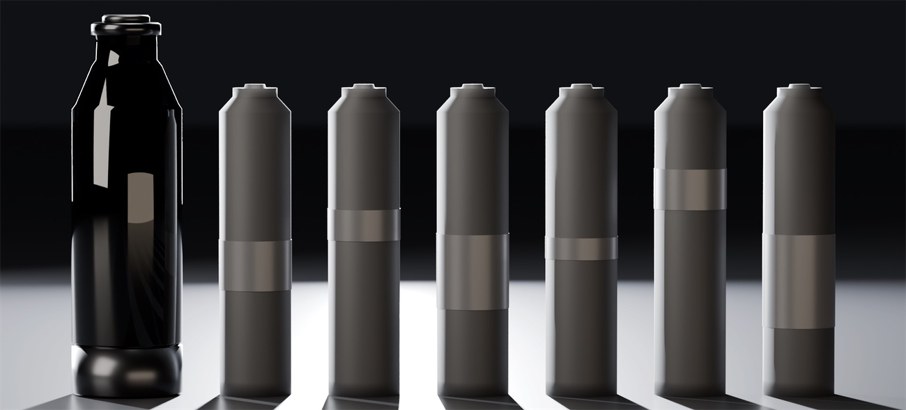

Move 01Object
Keep the object
The glass body, the spray engine, the docking probe and the bottom mechanism stay in service across cartridges.
Designed
[ LAB · AS DESIGNED ][ INVESTIGATION · AS EVIDENCED ] [+]
A permanent smoked-glass atomizer that takes sealed replacement cartridges through a keyed docking interface that does not rotate. Only the docking geometry would be shared — under one mark, U-DOCK.

1Cartridge rotation during docking: zeroDesigned— the cap turns; the cartridge only translates
2Smoked-glass body · blackened-steel collar and capDesigned— CMF chosen by the author
3U50 envelope Ø45 × 154 mm · cartridge Ø29 × 126 mmSpecified intent— locked concept envelope
4Cap turns 60° → 4 mm axial travelSpecified intent— starting target
NBOnly a 3D-printed form model existsPrototype · form model only— form and handling; no rig built
1⌖Ø TBC ⓂABC
Tolerance not releasedTBC— after supplier CAD, gate R1
2z2 · TBC — output of the P0A rig, not yet builtTBC— marked by the revision cloud
3Datums A / B / C · ISO 1101 or ASME Y14.5, never mixedDesigned
NBOnly a 3D-printed form model exists · no rig built, no test runPrototype · form model only
Engineered concept and validation programme. Nothing validated: no rig built, no test run. The only physical object is a 3D-printed form model (form and handling).
02 · Question
Every repeat purchase of a fine fragrance ships the glass, the pump, the cap and the collar again with the liquid. Many refill schemes still depend on a brand-specific bottle and a transfer step done by the customer. RF03-U1 splits the object in two. A permanent atomizer keeps the spray engine, the manifold, a short probe and the bottom mechanism. A sealed cartridge carries the reservoir, the valve, the fitment and the full-length dip tube. Only the docking geometry between them would be standardised.

Move 01Object
The glass body, the spray engine, the docking probe and the bottom mechanism stay in service across cartridges.
Designed
Move 02Reservoir
Fragrance, valve, fitment and the full-length dip tube travel together as one sealed unit, and leave together.
Designed
Move 03Interface
Standardise the docking geometry only. Scent, graphics and authentication stay with the house. Cross-brand adoption is a strategic hypothesis, not a current claim.
Concept · hypothesis
03 · Mechanism
Four controlled axial states carry the cartridge from inserted to locked. The fifth, S4, is the way out — step back and the order reverses: the valve closes before the outer seal lets go.
S0 · INSERTED · 0.0 MM · 0° · SEAL OPEN · VALVE CLOSED
| State | Position | Outer seal | M3 valve |
|---|---|---|---|
| S0 · inserted | z0 · first guided contact | Open | Closed |
| S1 · sealed | z1 · seal engaged | Engaged | Closed |
| S2 · connected | z2 · valve opening TBC | Engaged | Opening |
| S3 · locked | z3 · full service position | Engaged | Open |
| S4 · withdrawal | back through z2 to z1 | Retained | Closing, then closed |
Positions illustrative (z1 2.0 / z2 3.25 / z3 4.0 mm); z2 TBC; travel, torque and z2 are outputs of a P0A test not yet run. 60° and 4 mm are starting targets — an earlier brief gave 45–90° and 3–5 mm. The controlling margin is z2 − z1; cam geometry is released only after the states are measured.
04 · Inside
VisibleEnvelope / ghostDatumDimensionTBC · revision cloudWet path
A short permanent wet path, a long disposable one. Everything that spends a long time in contact with one fragrance — reservoir, valve, fitment, full-length dip tube — leaves with the cartridge.
| Datum | Definition | Controls |
|---|---|---|
| A | M4 fitment shoulder seating plane | Axial origin for seal engagement, valve opening and the locked position |
| B | M3 valve and M6 probe common axis | Radial alignment of the wet connector |
| C | Asymmetric cartridge key plane | Orientation; wrong-way insertion rejected |
ISO 1101 or ASME Y14.5 — one system per controlled package, never mixed. A drawing convention, not a compliance claim.
Rule 01Sequence
The outer interface seal engages before the valve opens. On removal the valve closes before the seal releases.
Designed
Rule 02Probe
A smooth, tapered or domed probe against a self-sealing valve. A sharpened piercing tip cannot reseal and is excluded.
Designed
Rule 03Load path
The carrier loads the cartridge's rigid base foot. Glass is not used as a precision bearing or as a cam reaction member.
Designed
The 28 mm height difference is not a usable mechanism budget until the datums align.
A keyed bore. The keyway is datum C, the centre dot is the probe and valve axis, datum B. Specified to stay legible as an 8 mm stamp on the cartridge base and the body underside, and at 16 px — one colour, positive or negative. An interface mark, not a house logo.
Gate 0 · formula identity
Stop condition · no formula-filled test until R3 closes
The reference composition supplied for compatibility testing listed CAS 623-19-8 against an intended solvent. That number is furfuryl propionate — neither IPM nor DPG. The response was not to substitute a guess: the formula supplier must confirm the identity and CAS number of every listed raw material, and nothing formula-filled runs until gate R3 closes.
Specified intent · gate requirement Documented review finding from the RF04-P materials protocol, shown with the author's approval. Governance firewall: RF04-P and RF03-U1 share a datum convention and a drawing system — never compatibility, durability or recyclability evidence.
05 · Pigment & material
Smoked glass
#0E0E10
≈ Sampled · concept render · body
Blackened steel
#605A54
≈ Sampled · cap, runs from #423D3B
Soft-touch black
#8D8886
≈ Sampled · cartridge under light, from #7C7875
Taupe reflection
#94897D
≈ Sampled · the object's one warm colour · this sheet's field
06 · Decisions
Each set aside for a mechanical or material reason, not a stylistic one · glyphs drawn from the geometry of each direction · Designed · decision record
07 · Claim ledger
Designed
5
Non-rotation, state order, datums, section architecture, U-DOCK
Specified intent
5
U50 and U100 envelopes, radial budget, 60° → 4 mm, gate structure
Validated
0
Nothing on this sheet carries this label. No rig built, no test run.
Not claimed
10
Performance, compatibility, life, cost, environment — listed below
| Claim | Value | Level | Qualifier |
|---|---|---|---|
| U50 envelope | Body Ø45 × 154 · cartridge Ø29 × 126 · 50 mL nominal | Specified intent | Locked concept envelope, pending formed-cartridge measurement |
| U100 envelope | Body Ø55 × 154 · cartridge Ø39 × 126 · 100 mL nominal | Specified intent | Same height as U50 |
| Radial budget | 8 mm per side (16 mm diametral) | Specified intent | Wall, collar, mechanism and clearance |
| Cap rotation → axial travel | 60° → 4 mm | Specified intent | Starting targets; earlier brief 45–90° and 3–5 mm |
| Cartridge rotation during docking | Zero | Designed | The cap turns; the cartridge translates |
| Docking state order | S0 → S1 → S2 → S3 · S4 valve closes before seal releases | Designed | Order designed; z positions specified intent / TBC |
| Datum scheme | A fitment seat · B valve / probe axis · C key plane | Designed | ISO 1101 or ASME Y14.5, never mixed |
| Section architecture | 9 parts · dip tube in the cartridge | Designed | AI-assisted reconstruction drawing |
| U-DOCK mark | Keyed bore · 8 mm stamp · 16 px | Designed | One colour, positive or negative |
| Gate structure | R0–R5 · stopped at R3 (CAS 623-19-8) | Specified intent | Plan; documented review finding |
| Open interface standard | Cross-brand adoption | Concept | Strategic hypothesis, not a current claim |
| Physical evidence | 3D-printed form model | Prototype · form & handling only | Scale, grip, proportion, component access; measures nothing about sealing or spray |
08 · Provenance, credits, revisions
| Rev | Date | Change |
|---|---|---|
| A | — | Origin in RF01-B1 / PUSH-EJECT: dispenser and seal above the cartridge; spring, latch and actuator below. |
| B | — | Permanent / consumable split; non-rotating carrier, three-ramp bottom cam, short M6 probe. |
| C | — | U50 and U100 concept envelopes at one 154 mm height. |
| D | — | Interface-control drawing set; datum scheme A / B / C; U-DOCK mark. |
| E | — | Five concept renders in smoked glass, blackened steel and soft-touch black, beside the drawing set. |
| F | — | Gate 0 identity error shown; fill-line section deferred to v2; date fixed as "2026 — ongoing". |
| G | — | Re-skinned as specimen sheet 04. |
Next milestone: build the transparent P0A connector rig before committing to cam geometry, glass detail or a universal platform.
09 · Next specimen
Specimen 03 / 08 · sheet 05
AHRK
One adaptive wall, six room states.
Open sheet 05